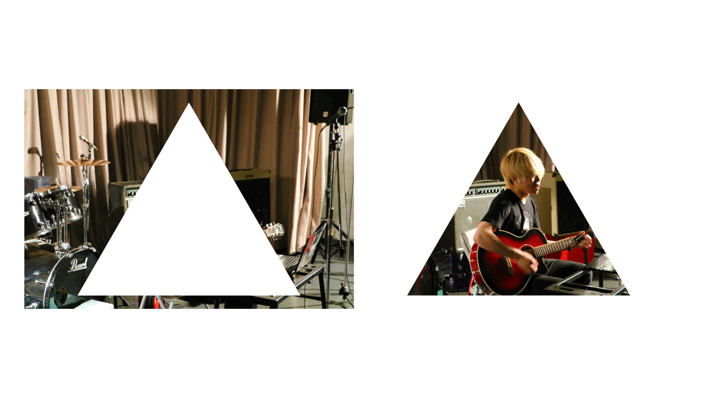
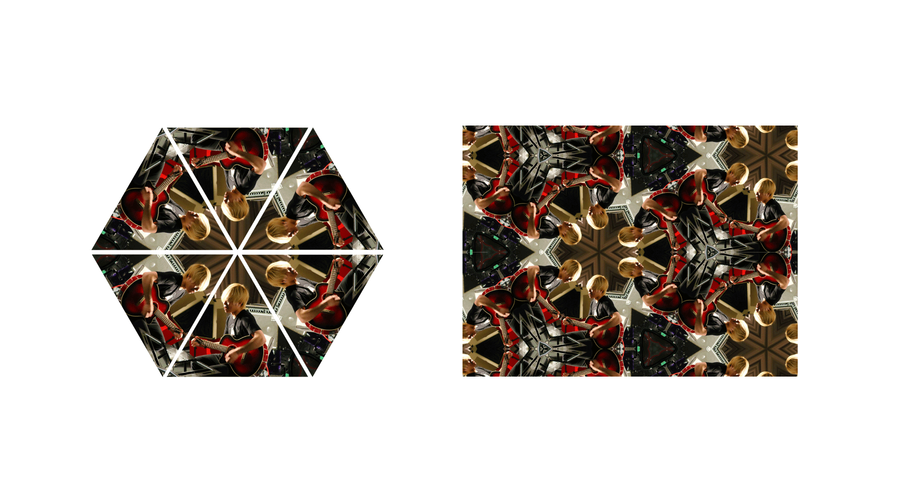
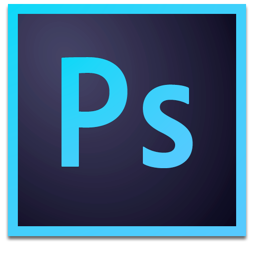

1.作品紹介

万華鏡に閉じ込められたような体験をすることができるインスタレーション。
Processingによりwebカメラから入る情報をリアルタイムで万華鏡の模様になるよう処理する。
2.詳細
webカメラで検出した画像を特定の位置で三角形にマスクする。
三角形全ての同じ頂点が隣接するようにマッピングを行う。
これらをリアルタイムで処理し、描写することで万華鏡の模様を表現している。
3.制作情報
-
使用ソフト

-
規模
学内活動での個人制作
-
期間
2016年6月 - 7月